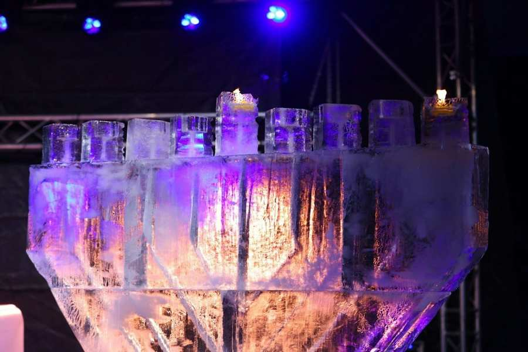
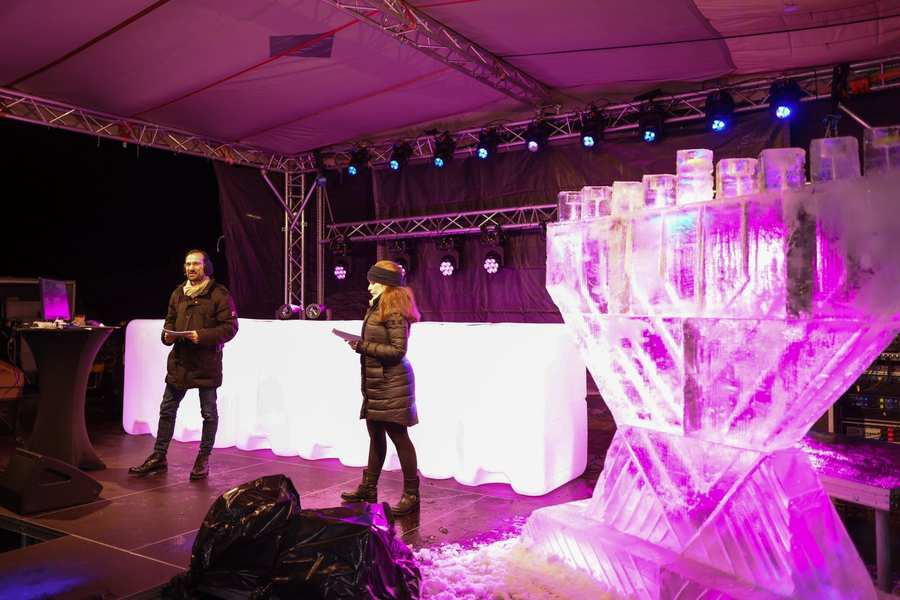
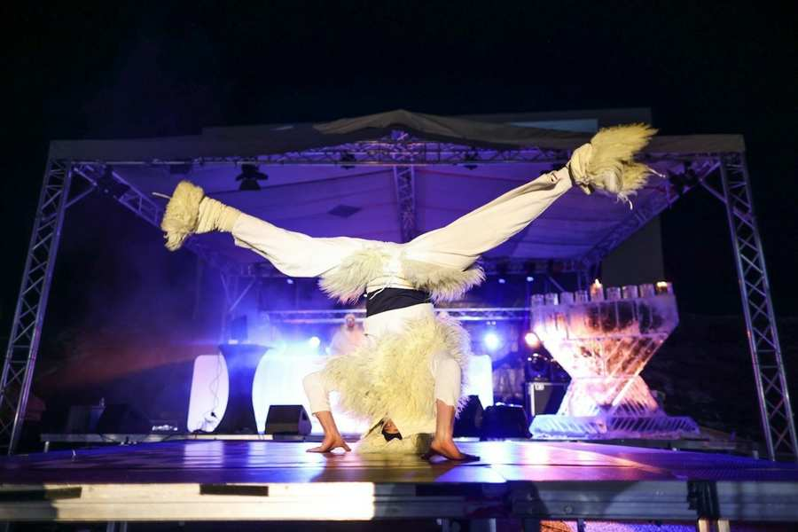

Bildquelle: Alex Zakharov
Der aktuellen Corona-Situation geschuldet fand am 28. November 2021 ein "Chanukka Drive-In" statt, bei dem die Gemeinde ohne physische Kontakte und dennoch gemeinsam feiern konnte. Das Organisationsteam aus IKG, Bet Halevi, Ohel Avraham, Club Chai, Bet Chabad, der IKG Jugendkommission und Tmicha bot den Gästen, vor allem den Jüngsten, ein abwechslungsreiches Programm. Rund 300 Autos und damit knapp 1.400 Gemeindemitglieder waren der Einladung ins Autokino Groß Enzersdorf gefolgt. Gemeinsam wurde das Entzünden der ersten Chanukka-Kerze zelebiert. Nach einleitenden Worten von Rabbiner Jacob Biderman wurde die Veranstaltung vom Moderatorenduo Betty Kricheli und Golan Yonatan eröffnet. Aus einem eine Tonne schweren Eisblock wurde eine fast zwei Meter große Chanukka geformt. IKG-Präsident Oskar Deutsch sprach die Brachot und hielt ebenso wie Oberrabbiner Jaron Engelmayer und Israels Botschafter Mordechai Rodgold eine kurze Ansprache.

Durch das Autokino-Konzept wurde sichergestellt, dass alle Familien in ihren Autos mitfeiern konnten. Essen wurde mittels einer App bestellt und von FFP2-tragenden Helfern zu den Fahrzeugen gebracht. Für diese aufwändige Organisation und Koordinierung mit den Behörden sind wir allen Beteiligten sehr dankbar. Auch für unsere Sicherheitsleute und die Polizei war es naturgemäß ein Großeinsatz, der bravourös gemeistert wurde.

Für die Kinder gab es eine Feuershow, akrobatische Einlagen, Trommeln und eine Tombola! Die Tombola diente einem guten Zweck, den der Wohltätigkeitsverein der IKG, Tmicha, organisierte. Unter den Preisen waren neben einem Reisegutschein im Wert von 2.500 Euro, auch ein Restaurantgutschein, ein iPhone sowie 25 Mal die Gelegenheit für ein exklusives Meet and Greet mit den Spielern der Austria Wien. Wir gratulieren den glücklichen Gewinnerinnen und Gewinnern. Alle, die mitgemacht haben, haben auch dabei geholfen, dass die Mitglieder in der Gemeinde, die gerade in diesen Krisenzeiten Unterstützung benötigen, Hilfe erhalten: wenn Sie auch spenden möchten, können Sie das hier tun.
Neben der Tombola gab es auch ein Spiele-Quiz mit Fragen rund um Chanukka, an dem sich über 500 Zuschauerinnen und Zuschauer beteiligt hatten.
Weiter unten finden Sie darüber hinaus das Video, dass einige Kinder und Jugendliche aus unserer Gemeinde extra für den Drive-In gedreht haben. Und natürlich auch die Grußworte von Bundespräsident Alexander Van der Bellen.